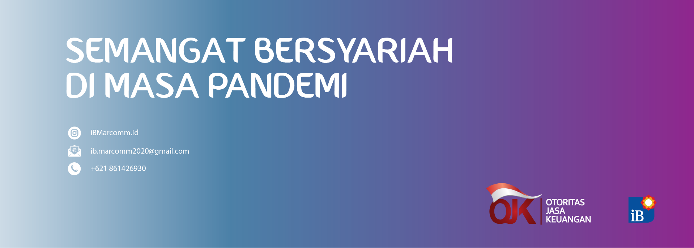

Sinergi dengan iB Marcomm, Otoritas Jasa Keuangan Tingkatkan literasi keuangan syariah melalui kegiatan Bulan Inklusi selama Oktober.
Forum Islamic Banking Marketing and Communcation ( iB Marcomm ) sinergi dengan Otoritas Jasa Keuangan di bulan Inklusi Keuangan selama Oktober. Beragam kegiatan seperti transaksi online yang diselenggarakan selama bulan Oktober ini diikuti beberapa merchant, mulai dari produk dan layanan berbasis fashion, hobi, otomotif, properti, hingga filantropi (amal). Acara juga dipadukan dengan talkshow webinar menarik menampilkan para praktisi perbankan, inluencer dan akustik musik.
Selain itu, gelaran bertema Syariah Online Festival ini juga menghadirkan program menarik dari produk-produk Perbankan Syariah. Diantaranya, pembukaan tabungan secara online dan 1.000 nasabah pertama yang bertransaksi senilai minimal Rp100 ribu di Syariah Online Fest 2020 akan mendapatkan Doorprize hingga Grand Prize.
Melalui Syariah Online Fest 2020, Perbankan Syariah memberikan kemudahan untuk membeli berbagai produk layaknya berbelanja online di marketplace, cukup dengan mengakses microsite iBmarcomm.co.id. Bagi yang ingin berbelanja sambil berdonasi juga bisa menyalurkannya kepada sejumlah lembaga amil zakat dan wakaf nasional mitra Perbankan Syariah.
Ketua Umum iB Marcomm Nur Trismantara mengatakan, sejalan dengan aspirasi menjadi Industri keuangan syariah yang modern di Indonesia, Perbankan Syariah senantiasa adaptif dan agile terhadap perubahan ekosistem digital. “Di tengah situasi yang masih menantang akibat pandemi COVID-19, Event Syariah Online Festival sangat relevan karena dapat mendukung transaksi yang sehat dan aman tanpa harus keluar rumah atau bersentuhan fisik dengan benda lain,” ujarnya.
“kemitraan yang baik antara iB Marcomm dan Otoritas Jasa Keuangan dapat saling memperkuat dalam memberikan kontribusi positif kepada masyarakat untuk pengembangan ekonomi syariah, juga diharapkan dapat mendorong terciptanya Syariah yang modern dan keren ,” harap Trisman
“iB marcomm berusaha untuk terus berperan aktif melayani masyarakat Indonesia. Salah satunya kami wujudkan melalui kegiatan literasi dan edukasi keuangan syariah melalui event Syariah Online Festival,” tutup Trisman.
Tentang iB Marcomm
Forum iB (baca: ai-bi) Marcomm (Islamic Banking Marketing Communication ) didirikan pada tahun 2012. Islamic Banking (iB) adalah penanda identitas industry perbankan syariah di Indonesia yang diresmikan sejak 2 Juli 2007. Penggunaan identitas ini bertujuan agar masyarakat dengan mudah mengenali layanan jasa perbankan syariah di Indonesia.
Logo iB merupakan penanda identitas industry perbankan syariah di Indonesia, yang merupakan kristalisasi dari nilai-nilai utama system perbankan syariah yang modern, transparan, berkeadilan, seimbang, dan beretika yang selalu mengedepankan nilai-nilai kebersamaan dan kemitraan dengan merefleksikan kebersamaan seluruh perbankan syariah di Indonesia untuk melayani seluruh masyarakat Indonesia—bukan hanya yang beragama muslim.
Perbankan Syariah antara lain : CIMB Niaga Syariah, Bank Muamalat, BNI Syariah, BRIsyariah, Bank Syariah Bukopin, Bank Mega Syariah, Bank BJB Syariah, Panin Dubai Syariah, Bank Victoria Syariah, BCA Syariah, Maybank Syariah, Mandiri Syariah, Danamon Syariah, OCBC NISP Syariah, DKI Syariah, Bank Aceh Syariah, Bank NTB Syariah, Bank BTN Syariah, BTPN Syariah, PermataBank Syariah, Bank Sinarmas Syariah.
